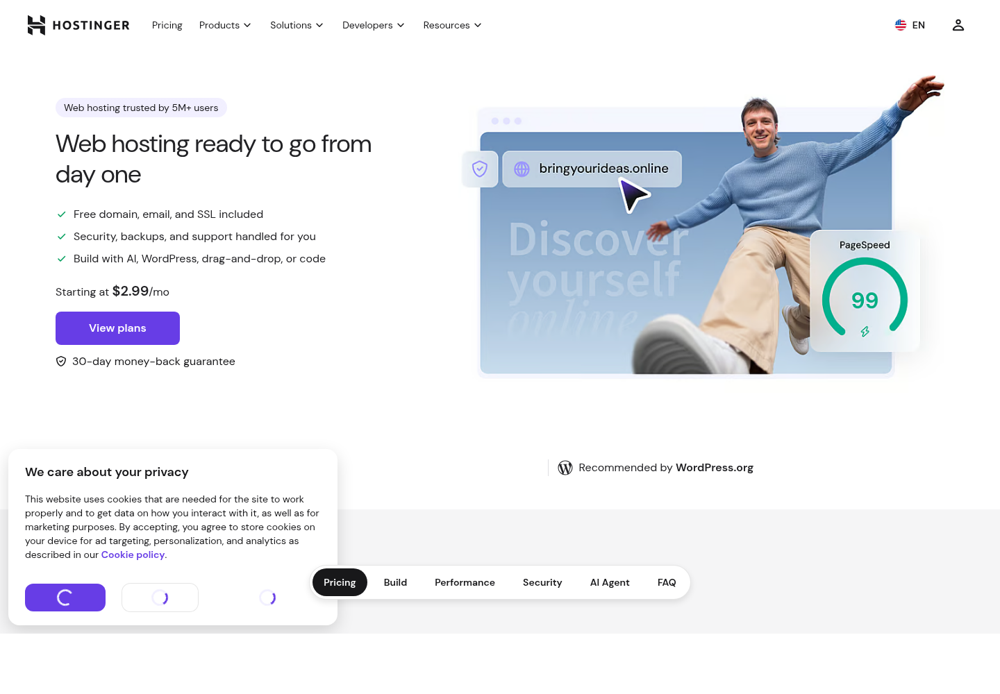

Пошаговая инструкция · hPanel без команд
Hostinger Web Hosting + PHP + MySQLКак разместить портфолио на Hostinger
Создать пустой сайт, использовать временный домен, загрузить ZIP, создать базу и выполнить установку в браузере.
Это не бесплатный хостингНа 9 сентября 2026 года Hostinger предлагает платные Web Hosting-планы с 30-дневной гарантией возврата. Бесплатная проба конструктора не публикует произвольный PHP-сайт.
Технически подходит: PHP/MySQL, временный домен, автоматический SSL, файловый менеджер и резервные копии.
Проверено по официальному сайту
Сначала оцените стоимость

Рекламная цена указывается для длительного срока оплаты. На официальной странице пример $2.99/мес относится к оплате сразу за 48 месяцев, а продление дороже. Смотрите итоговую сумму корзины и цену продления.
Что подходит
- временный домен;
- автоматический SSL;
- PHP и MySQL;
- File Manager;
- 30 дней на возврат.
Что не подходит
- бесплатная проба Builder;
- публикация без тарифа;
- план Website Builder без доступа к файлам;
- ожидание бесплатного бессрочного сайта.
Весь путь
Восемь действий
1Купить Web Hosting
Не Website Builder и не VPS.
2Добавить Empty website
Можно выбрать временный домен.
3Дождаться автоматического SSL
4Создать пустую MySQL-базу
5Открыть «Access all files»
6Распаковать ZIP рядом с public_html
8Войти в admin.html и скачать копию
Шаг 1
Выберите правильную услугу
- Откройте https://www.hostinger.com/web-hosting.
- Выберите обычный Web Hosting с поддержкой PHP/MySQL.
- Проверьте полный платёж сейчас и стоимость продления.
- Сохраните условия возврата и подтверждение заказа.
- Войдите в hPanel.
https://www.hostinger.com/web-hosting
Не выбирайте Hostinger Website Builder: его файловый менеджер недоступен, а передаваемый сайт нельзя загрузить как обычный PHP-проект.
Возврат — не бесплатный тариф. Домены и отдельные услуги могут иметь другие правила возврата; перед оплатой прочитайте текущую политику.
Шаг 2
Создайте пустой сайт
- Откройте раздел Websites.
- Нажмите Add website.
- Выберите Empty website, а не WordPress/Builder.
- Выберите автоматически созданный временный домен либо свой домен.
- Откройте Dashboard созданного сайта.
Адресвременный домен Hostinger
По официальной справке временный домен работает, пока активен тариф, его можно позже заменить собственным.
Зафиксируйте адрес целиком. Он понадобится для install.php и admin.html.
Шаг 3
Проверьте автоматический SSL
Hostinger устанавливает бесплатный Lifetime SSL автоматически при добавлении сайта или поддомена. Это может занять 1–2 часа.
- Откройте Websites → Dashboard → SSL.
- Убедитесь, что статус сертификата активен.
- Откройте сайт по https:// без предупреждения.
- Если статус Failed держится больше двух часов, откройте меню ⋮ и выберите Reinstall.
https://ВАШ-ВРЕМЕННЫЙ-ДОМЕН/
Не запускайте install.php по HTTP. Если используете свой домен, сначала направьте его на Hostinger и дождитесь DNS и SSL.
После установки SSL Hostinger по умолчанию принудительно включает HTTPS.
Шаг 4
Создайте пустую MySQL-базу
- Откройте Websites → Dashboard.
- В боковом меню найдите Databases → Management.
- В блоке создания введите имя базы, пользователя и пароль.
- Нажмите Create.
- Скопируйте полные имена с префиксом вида u123456789_.
Databaseu123456789_portfolio
Не сокращайте префиксы. База должна быть новой и пустой; импортировать SQL вручную не надо.
Шаги 5–6
Распакуйте ZIP уровнем выше
- Откройте Dashboard → File Manager.
- Выберите Access all files of web hosting, не «files of domain».
- Откройте domains → ваш-домен: здесь видна public_html.
- Загрузите portfolio-php-mysql.zip.
- Нажмите правой кнопкой по ZIP → Extract в текущую папку.
📁 domains/ваш-домен
├── 📁 public_html
├── 📁 private
├── 🔑 INSTALL-KEY.txt
└── 📘 инструкции PDF
Не распаковывайте ZIP внутри public_html. Папка private должна быть рядом с ней, чтобы пароли базы не были доступны посетителям.
Шаг 7
Установите сайт
Откройте адрес со своим временным или обычным доменом:
https://ВАШ-ДОМЕН/install.php
Установщик создаст таблицы, перенесёт работы и удалит установочные файлы.
Если видна старая заглушка, проверьте, что новый index.html находится непосредственно в public_html.
Шаг 8
Войдите в админку
https://ВАШ-ДОМЕН/admin.html

- Введите ключ из INSTALL-KEY.txt.
- Подготовьте новый ключ в админке и сохраните его.
- Измените контент и проверьте обычный сайт.
- Скачайте первую резервную копию JSON.
- Удалите ZIP с хостинга.
Сессия истекает через 15 минут бездействия. Можно отозвать все сессии; публикации записываются в историю.
Проверка и проблемы
Финальный список
- домен открывается по HTTPS;
- видны все страницы и изображения;
- /admin.html требует ключ;
- изменения публикуются;
- резервная копия скачивается;
- /install.php удалён;
- private находится рядом с public_html;
- ZIP удалён, ключ хранится у владельца.
SSL FailedПодождите до двух часов, проверьте направление домена и выберите Reinstall.
Database errorИспользуйте localhost и полные имена с префиксами.
403/404Проверьте расположение файлов непосредственно в public_html.
Нет File ManagerВероятно выбран Website Builder; нужен обычный Web Hosting.
Официальные источники
На чём основана инструкция
Версия инструкции: 9 сентября 2026 года. Это платный международный сервис; проверьте доступные способы оплаты, валюту и итоговую стоимость из вашей страны.